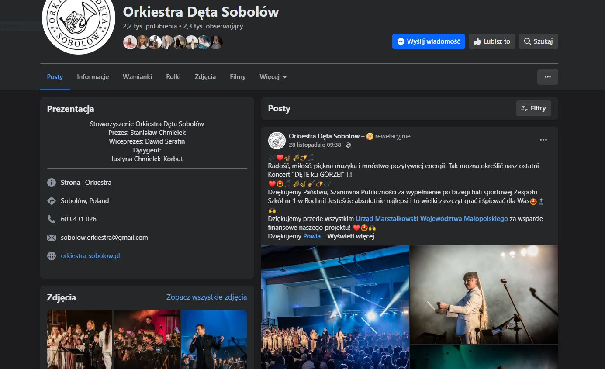
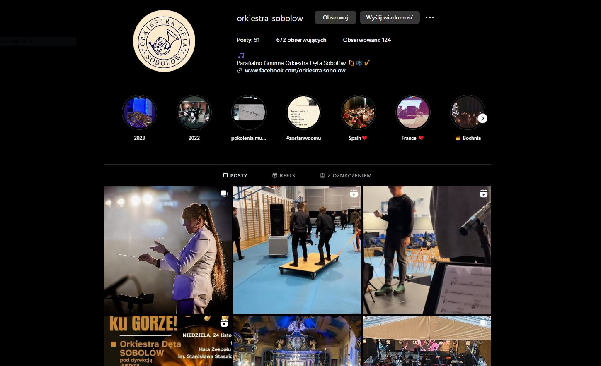

Szkoła Muzyczna I Stopnia w Sobolowie działa od 2010 roku, zapewniając profesjonalne kształcenie
muzyczne i pielęgnując pasję młodych talentów. To tutaj rodzą się przyszli muzycy, którzy nie
tylko zasilają naszą orkiestrę, ale także rozwijają swoje artystyczne ścieżki. Zajrzyj do naszej
szkoły i rozpocznij swoją wyjątkową podróż muzyczną – czekamy właśnie na Ciebie!

Na naszych koncertach i wydarzeniach zawsze dzieje się coś wyjątkowego – chwile pełne muzyki i
emocji uchwycone w błysku aparatów. Zajrzyj do naszej galerii, by odkryć magię tych momentów i
poczuć atmosferę naszych występów. Jeśli uwielbiasz fotografować, zapraszamy do współpracy –
wspólnie stwórzmy kolejne niezapomniane kadry!

Bądź na bieżąco z naszymi koncertami, wydarzeniami i sukcesami – na naszym Facebooku znajdziesz
zawsze najświeższe informacje, relacje z występów, zdjęcia i zapowiedzi kolejnych muzycznych
przedsięwzięć. Nie przegap żadnej okazji, by być częścią naszej muzycznej podróży!

Śledź nas na Instagramie, aby zobaczyć naszą orkiestrę od kulis – publikujemy rolki, zdjęcia z
przygotowań do koncertów i ciekawe materiały, które pokazują, jak wygląda życie muzyków na co
dzień. Dołącz do nas i odkryj magię tworzenia muzyki z zupełnie innej perspektywy!